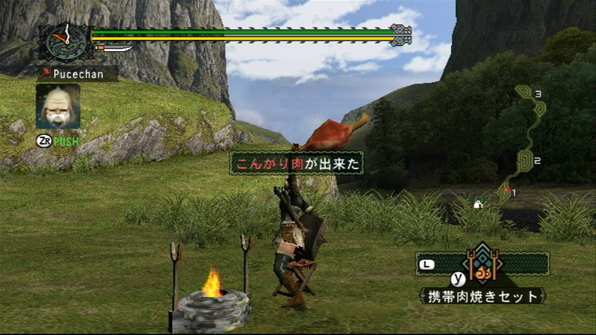
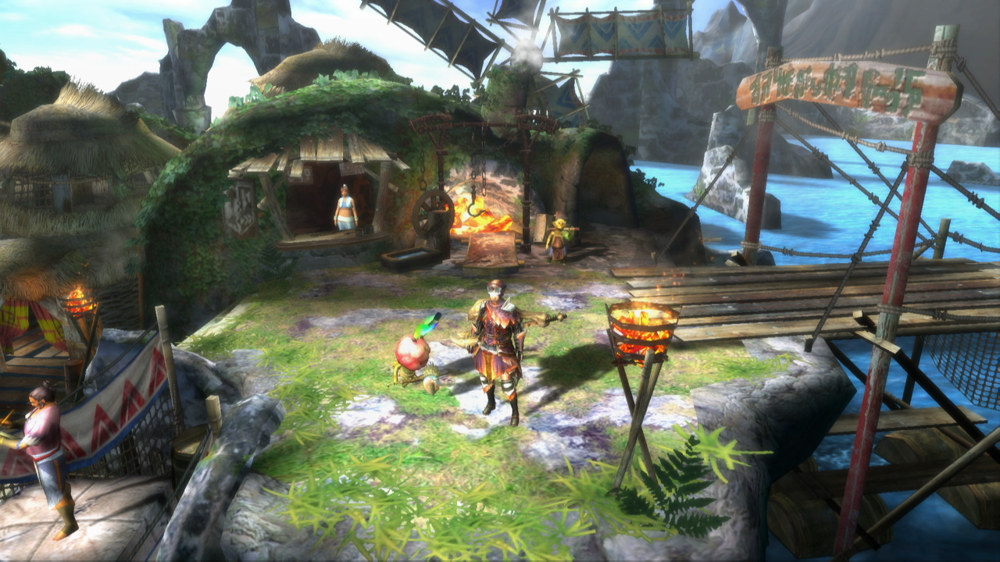
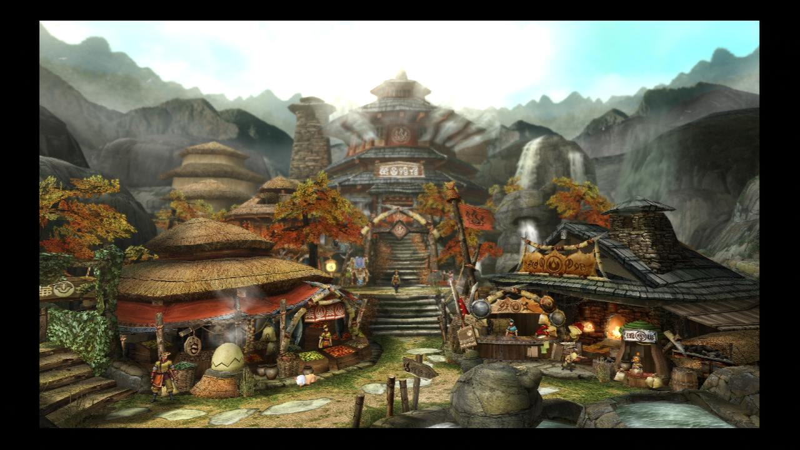

With Monster Hunter World finally out in the wild, I’ve found myself playing a lot of the earlier entries so I thought I’d look back at what each generation brought to the table…
Monster Hunter as a franchise had an underwhelming beginning in the West. The original PS2 game failed to sell causing us to miss out on the expanded Monster Hunter G (Interestingly, the G doesn’t stand for anything afaik but is often used in Japan to mean bigger/better. The G titles would later become the Ultimate entries in the West.) and the sequel Monster Hunter 2 (Dos).

The G entries offer numerous tweaks to the game they are based on but the main feature that they brought with them is the addition of G-Rank quests, a tier above what the original titles provide and the ultimate test of Hunter skill. This trend would continue throughout the series, with Western releases typically being based on these versions of the games.
The initial games came out of the gate pretty fully formed with the mechanics of hunting and capturing nailed down from the off and a lot of minutiae in how certain stats work like Sharpness; a damage modifier that lowered the more strikes you make and Affinity; essentially a critical chance modifier, not really changing all that much in later games.
A lot of the initial roster of monsters would become iconic for the series, creatures like Rathian and Rathalos were here from the start and would make appearances in every entry afterwards. Monster Hunter 2 (Dos) would add time of day and seasonal changes which affected monster appearances as well as the addition of decorations which allowed you to customise your skills more easily.
The series would return to the West with Monster Hunter Freedom on the PSP, it was based on Monster Hunter G but included new content and features. The move to the portable powerhouse saw it make some headway in popularity, so much so that we also saw Monster Hunter Freedom 2 and Monster Hunter Freedom Unite make their way to the system. These included monsters and elements from Monster Hunter 2 (Dos) with Unite being the largest game so far based purely on amount of monsters, weapons and quests.

The third generation launched on the Nintendo Wii with Monster Hunter 3 (Tri), initially announced for the PS3, development was moved to the Wii because of the system’s broader audience. Tri brought with it underwater combat that only saw use in this and Monster Hunter 3 Ultimate. Japan saw another PSP release in between these that never arrived here: Monster Hunter Portable 3rd. Portable 3rd has a distinctively oriental look and feel and didn’t have the underwater elements of the other third generation games, it also is unique in that it came out on the PlayStation 3 as one of the few PSP Remasters.
Monster Hunter 3 Ultimate (MH3U) brought in elements from Portable 3rd such as the Misty Peaks area, making it more than just an extension of Tri. The third generation also introduced the concept of blights, elemental debuffs that made monster attacks more interesting than just straight damage, requiring you to give more thought to your preparation.
Generation four, starting with Monster Hunter 4 on the 3DS brought with it three dimensional terrain and the mounting of monsters to do damage. Maps were no longer flat expanses with some vegetation, climbable surfaces and ledges to jump off made a big difference to how navigating the world feels. Monster Hunter 4 Ultimate brought with it online multiplayer which was a massive addition compated to the purely local wireless option of the prior 3DS entries.

Monster Hunter X known as Monster Hunter Generations here is a spin-off game, celebrating 10 years the series. It acts almost like a greatest hits entry featuring lots of fanservice, villages from the prior games make an appearance along with a lot of fan favourite monsters.
It does bring a lot of new stuff to the table though, introducing Hunter Arts; special moves you can pull off after filling up a gauge and Hunter Styles; essentially four subclasses that alter your moveset and determine what Hunter Arts you can access.
Monster Hunter XX (Double Cross) acts as the G or Ultimate edition of X/Generations adding two new Hunting Styles as well as bringing new monsters as well as reintroducing some old favourites (like Barroth). Double Cross released on the 3DS and on the Switch.
Sadly it looks like the 3DS or Switch versions of Double Cross won’t be localised now Monster Hunter World is out, but the Switch at least is region free so you can import it if you are interested in it. I would LOVE it if it did get localised though. The popularity of World COULD sway Capcom to bring it over.
So that’s a brief look at what each generation brought, I intend to go a bit more in-depth in the coming weeks as I plan on playing through the ones I can stream, so will likely talk about them a bit more. It’s interesting to see how the games have evolved as, at least at first glance, they do all seem very similar. It’s definitely been a case of evolution rather than revolution but the series has definitely grown from it’s rough and ready PS2 roots.